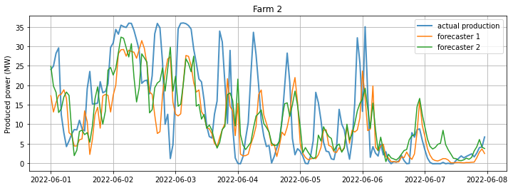

In an earlier post, we discussed different methods for forecasting the future values of a variable. Forecasting is a rich subject: Even a cursory survey will suggest many different algorithms. Some algorithms, such as deep learning models, can be quite elaborate, and be able identify invisible patterns in the time series.
However, sometimes even the best algorithm is not good enough.
Furthermore, an algorithm that looks less accurate under some conditions may be superior under other conditions. Therefore, it might be better to use a combination of these algorithms, especially in the context of time-series forecasting. Additionally, practitioners observe that even the most sophisticated algorithms are frequently outperformed by simple ones. Instead of chasing The One Big algorithm that generates forecasts with very little error, combining several weak algorithms in simple ways, such as averaging, seems to be the better approach1.
1 Armstrong, J. S. (2001). Combining forecasts. In: J. S. Armstrong (Ed.), Principles of Forecasting: A Handbook for Researchers and Practitioners, Norwell: Kluwer, pp.417-439.
For the rest of this post, we will assume that a set of forecasts is given. We don’t particularly care where they come from; they can be coming out of crystal balls for all we care. We will only discuss different ways to combine them, optionally adding some extra features.
Model combination methods
The Simple Mean method takes all forecasts for a particular target time and just averages them. No bells, no whistles. No parameters to estimate, no learning from the past. Still, it works surprisingly well. It frequently outperforms more sophisticated combinations.
The Simple Mean averages the forecasts with equal weight. However, if we have reason to trust some forecasters more than others, we can assign a greater weight to them so that they have a greater influence on the result. Usually, these weights are set using past data by evaluating the error of each forecaster. Forecasters with minor errors would carry greater weight in the result.
One such formula, the Minimum Variance method (also called the Inverse-Variance Weighting method), was proposed by Bates and Granger in 19692. It weights each forecaster according to its past precision, that is, the inverse of its variance. The variance of a forecaster can be estimated as the mean of the squares of its past errors.
2 Bates, J.M., Granger, C.W.J. (1969). “The combination of forecasts”. Operations Research Quarterly 20, 451–468.
It turns out that, when we average forecasts using the inverses of variances, the variance of the result is minimized; hence the name of the method. The same method is also used in portfolio theory to set up a stock portfolio that minimizes risk.
Regression is the bread-and-butter of data scientists, and one might naturally use linear regression algorithms to determine the best parameters in the linear combination of forecasters.
So, how well do they work? Let us illustrate some of these methods on some example data: Hourly wind power production taken from two wind farms over more than two years.
Model combination on wind farm production forecast
Our data is composed of three different sets of forecasts on two separate wind farms in Western Turkey, as well as the actual production on these farms. Two of the forecasters are commercial products based on meteorological models. The third is just a “persistence model”, which simply says that the production at the target time will be the same as the production two hours before it.
Here is an overview of the commercial forecasts over one week, together with the actual production: 
The plots show that even though the forecasts follow the general trend, there are occasional dips and peaks in the production that the models do not capture. The addition of the persistence model would help us to capture such short-term variations.
We can assess the performance of the forecasts with mean absolute error over more than two years of data. Smaller values indicate a better forecaster:
| Forecaster | Farm 1 | Farm 2 |
|---|---|---|
| Forecaster 1 | 4.59 | 3.78 |
| Forecaster 2 | 4.83 | 4.60 |
| Persistence | 5.41 | 3.74 |
The mean absolute error values have the same units (MW) as the production values. Farm 1 has a greater production capacity; accordingly, the errors there have larger values. We can compare forecast performances within each farm, but we should not compare one forecaster across farms.3
3 Alternatively, we can divide the mean-absolute value by the farm capacity. Then a comparison across farms is reasonable.
We see that on farm 1, the best performing model is Forecaster 1. The persistence model performs worst in Farm 1 but, interestingly, it is the best forecaster in Farm 2.
Now, let us combine these models. The simplest combination is averaging the forecasts at each time step. The mean-absolute error of this combination is lower than any single forecaster:
| Forecaster | Farm 1 | Farm 2 |
|---|---|---|
| Forecaster 1 | 4.59 | 3.78 |
| Forecaster 2 | 4.83 | 4.60 |
| Persistence | 5.41 | 3.74 |
| Simple Mean | 4.39 | 3.59 |
This is impressive for such a simple step. Can we improve on this by using more sophisticated combinations, for example, by the Minimum Variance method?
To apply this, we need an additional step: We need to learn the weights we give to each forecaster. We split the two-year data set into training and test sets. Over the training set, we evaluate the mean square error of each forecaster, and use them as inverse weights. We then make predictions over the test set using this set of weights in the averaging. After that, the mean absolute errors are as follows:
| Forecaster | Farm 1 | Farm 2 |
|---|---|---|
| Forecaster 1 | 4.59 | 3.78 |
| Forecaster 2 | 4.83 | 4.60 |
| Persistence | 5.41 | 3.74 |
| Simple Mean | 4.39 | 3.59 |
| Minimum Variance | 4.38 | 3.54 |
We see that the Minimum Variance method again outperforms the individual forecasts. However, it is not significantly better than Simple Mean, even though its algorithm is more complex.
We can try a cheat: Using our domain knowledge, we can enrich the data with some new features. For example, the wind follows the natural daily and yearly cycles, and the errors of individual forecasters may depend on the time of the day and year, instead of being constant all the time.
To try this hypothesis, we break the data into hours and months and evaluate each group’s mean square errors separately. This gives us a different weight for each (hour, month) pair. That way, the weights of forecaster 1 at 9:00 in January, 10:00 in January, and 9:00 in February will all be different.
Modifying our model combination algorithm this way, we get the following mean absolute error:
| Forecaster | Farm 1 | Farm 2 |
|---|---|---|
| Forecaster 1 | 4.59 | 3.78 |
| Forecaster 2 | 4.83 | 4.60 |
| Persistence | 5.41 | 3.74 |
| Simple Mean | 4.39 | 3.59 |
| Minimum Variance | 4.38 | 3.54 |
| Minimum Variance, grouped by hour and month | 4.34 | 3.53 |
We get an improved forecast as a result of grouping the data by month and hour. The improvement over the Simple Mean is slight. Still, depending on the objective, this can be significant.
As a last attempt, let us combine the three forecasts using linear regression. This model uses the month and hour information as categorical variables, in addition to the individual forecasts.
| Forecaster | Farm 1 | Farm 2 |
|---|---|---|
| Forecaster 1 | 4.59 | 3.78 |
| Forecaster 2 | 4.83 | 4.60 |
| Persistence | 5.41 | 3.74 |
| Simple Mean | 4.39 | 3.59 |
| Minimum Variance | 4.38 | 3.54 |
| Minimum Variance, grouped by hour and month | 4.34 | 3.53 |
| Linear Regression | 4.40 | 3.51 |
In both farms, linear regression performs better than all individual forecasts. In Farm 2 it is the best one, albeit by a very small margin. However, in Farm 1, it performs slightly worse than other combined models.
We see that one combination method is not consistently better than others. On another farm, we might find that the Simple Mean is the most successful one. In practice, we would try out several combination methods in every farm, and pick the best one.
What else?
We can try other model combination algorithms as well. For example, Bayesian Model Averaging 4 is another method that assigns weights to the sum. It evaluates the Bayesian Information Criterion (BIC) for each forecaster using past data. Given the data, this parameter is related to the probability that this forecaster is the best one. These probabilities are used as the weights for the model combination.
4 Hinne M, Gronau QF, van den Bergh D, Wagenmakers E-J. A Conceptual Introduction to Bayesian Model Averaging. Advances in Methods and Practices in Psychological Science. 2020;3(2):200-215.
We can assume that the weights are not constant but change over time. We can evaluate the weights only within a fixed time window, say, a few weeks before each target time. Then we can shift the window as we go along. Timmermann 5 lists several such methods.
5 Timmermann, A. (2006). Forecast combinations, in Elliott G., Granger C. W. J. and Timmermann A. (eds), Handbook of Economic Forecasting, North-Holland, Amsterdam, pp. 135–196.
However, going for more and more sophisticated combination algorithms may not always be useful. In many practical problems, it turns out that the Simple Mean is the best combination method (in the sense of minimum error). More complicated combination methods do not significantly reduce the error metric; they may even result in a bigger error. This observation is called the Forecast Combination Puzzle.
The main reason is that the weights of forecasters are not known beforehand, but are estimated from past data. This process itself introduces its own biases and errors. If the error variances of individual forecasters are close to each other, the weight estimation error will be dominant and throw us off course. To avoid this problem, Timmermann suggests using the Simple Mean, unless there is a reason to think that the error variance of forecasters is significantly different.
This brings us back to Occam’s Razor: Start simple, and improve only if necessary. Clever and sophisticated algorithms may look sexy, but simplest methods usually perform the best.
(This post was first published in the Kavaken company blog on October 7, 2022.)